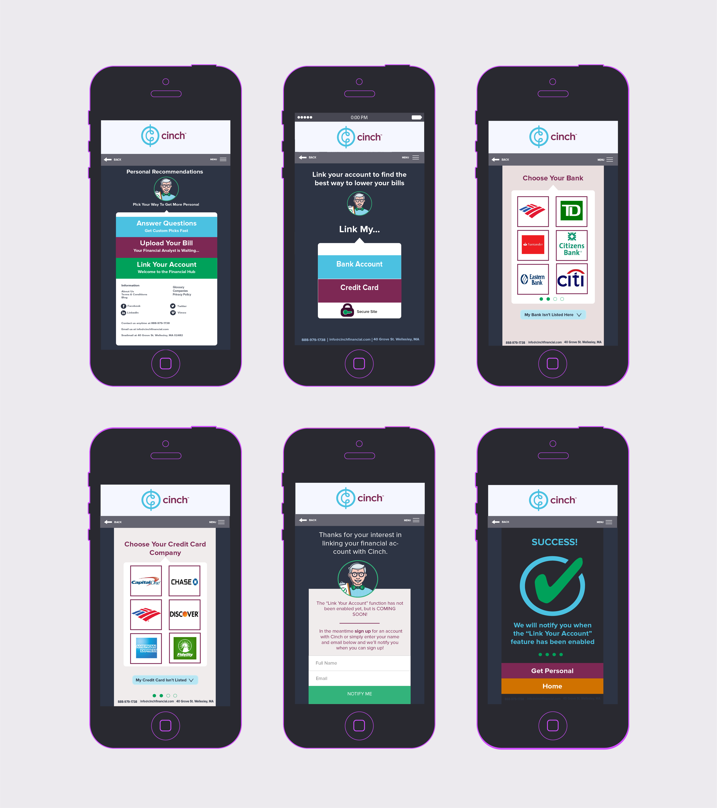

HI-FI MOCKUP
CINCH FINANCIAL
Cinch Financial is a small financial tech startup. They have curated a list of the best financial products to make finding good financial services easier for the consumer.
I worked with a small consulting team to improve the user experience of the cite and work towards driving more users to engage with the site’s offerings. My team worked on adding an account linking feature that would allow users to link their financial accounts to their Cinch account, and ultimately receive the best financial advice and recommendations.
My role included redesigning the user experience and user interface and building a functional prototype. I streamlined the interface design with the site’s existing aesthetic, but overall simplified the experience, giving the user one task per page. The prototype is fully functional and responsive.